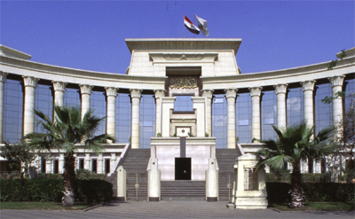

لمحة عن مبنى المحكمة |
|
 بتاريخ 15 يوليو 2001 افتتح السيد الرئيس محمد حسنى مبارك مبنى المحكمة الدستورية العليا، المقام بكورنيش النيل بالمعادى، على مساحة أربعة آلاف متر مربع، ويتكون من أربعة أدوار متكررة، بخلاف البدروم والأرضى، بالإضافة إلى قاعات الجلسات والمؤتمرات والاحتفالات وصالونات لكبار الزوار، ومكتب رئيس المحكمة و33 مكتباً للمستشارين، ومكتبة قضائية، وكافتيريا ومكاتب للموظفين ومقر لإتحاد المحاكم والمجالس الدستورية العربية بالإضافة إلى مسطحات خضراء، وتم تجهيز المبنى بأحدث تكنولوجيا العصر المزودة بأحدث التقنيات، بالإضافة إلى شبكة حاسبات آلية ودوائر تليفزيونية. ومبنى المحكمة يعد تحفة معمارية وصرح حضارى قومى يجمع بين الطراز المعمارى الفرعونى بشموخه وعظمته وهو سمة الحضارة الفرعونية القديمة وبين الطراز المعاصر للحضارة العصرية الحديثة والمزود بأحدث وأعلى التقنيات العلمية المتطورة من أنظمة الاتصالات والأجهزة والتشطيبات المميزة والأثاث الفاخر الداخلي والذي يتمشى مع طبيعة ومهام العمل القضائي ووقاره والمكانة الرفيعة للمحكمة. وقد أقيم مبنى المحكمة الدستورية العليا على طراز معبد الأقصر على 14 مسلة فرعونية بالدور الأرضي و14 مسلة من الطابق الأول حتى الطابق الرابع وقد روعي الاستفادة من تصميم المعابد المصرية والأعمدة والتيجان المزينة بزهرة اللوتس والبردي. وبلغ ارتفاع الأعمدة 28 متراً، كما أقيمت نافورة على شكل زهرة اللوتس. كما حوت المحكمة لوحات تجميلية بالزجاج المعشق بالرصاص، وبما يتوافق مع تصميم المبنى الذى ينتمى إلى العمارة المصرية القديمة، وما تحمله من ملامح الطراز المعمارى القديم برؤية معاصرة. وهكذا، فإن المحكمة الدستورية العليا بمبانيها وطرازها وشكلها المميز، تعد معلما من معالم مصر السياحية والحضارية العريقة. |